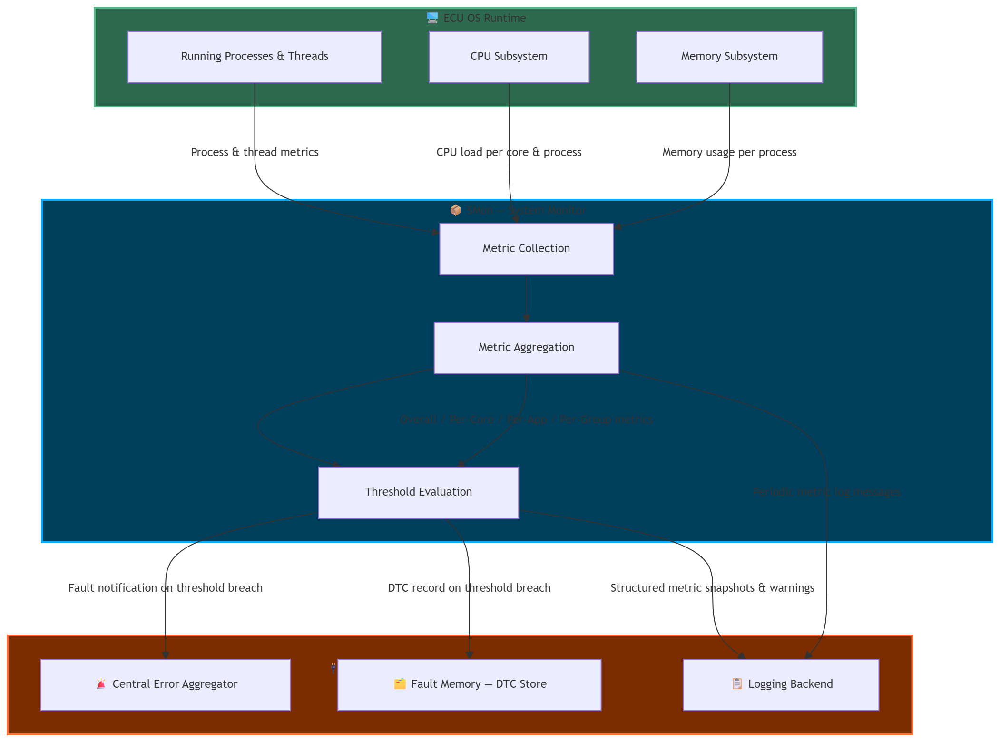

DR-010-SMon: Introduce System Monitoring (SMon) middleware component for automotive ECUs#
Date: 2026-10-09
Introduce System Monitoring (SMon) middleware
|
status: proposed
|
||||
Summary#
This feature request proposes introducing System Monitoring (SMon) as a reusable S-CORE middleware component for monitoring CPU and volatile memory resource utilization on automotive ECUs running Linux or QNX.
SMon provides periodic resource measurements, configurable threshold evaluation, and standardized integration interfaces for error reporting, diagnostic fault recording, and logging.
Detailed Feature Requirements#
Detailed requirements are documented separately:
Context & Motivation#
On a Domain Controller ECU, multiple applications share CPU and memory resources simultaneously. There is currently no standardized S-CORE middleware component that:
Periodically measures CPU and memory load at the system, core, process, and application-group level
Evaluates those metrics against configurable thresholds and triggers fault reporting (error aggregator + DTC) or warning logs accordingly
Operates portably across Linux and QNX via a clean platform abstraction boundary
Exposes well-defined required interfaces for error reporting, DTC recording, and logging — fully decoupled from any specific backend implementation
Without such a component, each project team implements ad-hoc monitoring logic, leading to fragmentation, inconsistency, and missed faults across vehicle programs.
Requested Capabilities#
CPU Monitoring#
[ ] Overall system CPU load (as a percentage)
[ ] CPU load per individual core
[ ] CPU load per running application (process)
[ ] CPU load per configured application group
Memory#
[ ] Overall volatile memory load (as a percentage)
[ ] Volatile memory load per running application (process)
[ ] Volatile memory load per configured application group
Threshold & Alerting#
[ ] Configurable threshold rules per metric type
[ ] Configurable comparison operator per rule (e.g., greater than)
[ ] Configurable actions per rule:
ReportError,RecordDTC,LogWarning[ ] Configurable trigger mode per action:
AlwaysorOnChange[ ] Threshold rules scopeable to a specific application or application group
Integration Interfaces#
[ ] Required interface for error reporting to the central error aggregator
[ ] Required interface for DTC recording in the fault memory
[ ] Required interface for log message publication
Configuration#
[ ] All parameters readable from an external file (e.g., JSON) at startup — no recompilation
[ ] Named application groups definable in configuration
[ ] Logging enable/disable configurable per metric category
[ ] Metrics logging interval configurable
[ ] One or more threshold rules definable in configuration
General & Platform#
[ ] Structured log messages published at the configured interval
[ ] Graceful shutdown on
SIGINT/SIGTERM[ ] Concurrent metric collection to minimize per-cycle latency
[ ] Portable between Linux and QNX via a platform abstraction boundary
[ ] Robust against processes or threads appearing/disappearing during an active scan
Integration Context#
The SMon component integrates with three platform-provided services via required interfaces:
External Service |
Role |
|---|---|
Central Error Aggregator |
Receives fault notifications when configured thresholds are breached |
Fault Memory (DTC Store) |
Receives DTC records for persistent fault logging |
Logging Backend |
Receives structured metric snapshots and threshold warning messages |
⚠️ SMon does not mandate a specific implementation of any of these services. They are integration points to be fulfilled by the platform adopter.

Anticipated Future Extensions#
The following items are out of scope for this initial request but identified as natural future extensions:
Future Need |
Description |
|---|---|
Additional metric sources |
Network I/O (SOME/IP, DDS), Disk I/O, GPU utilization |
Threshold hysteresis |
Sustained-breach detection over N cycles + lower watermark for alert clearing |
Live telemetry streaming |
Real-time metric streaming over a network transport to visualization tools or IDE dashboards |
Cross-platform unit testing |
Verifying platform-specific monitor logic on a Linux host via OS-call mocking (no QNX target needed) |
Stakeholders#
Role |
Party |
|---|---|
Requester |
Valeo |
Platforms |
Linux, QNX |
Domain |
Platform Services / Health & Diagnostics |
Acceptance Criteria#
[ ] All needs and requirements reviewed and accepted by the S-CORE community
[ ] Required interface contracts (
IErrorReporter,IDTCRecorder,ILogger) defined and agreed upon by the community[ ] Platform portability scope (Linux + QNX) acknowledged and accepted
[ ] A follow-up implementation issue is created and linked to this request